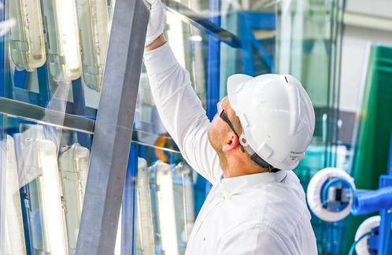
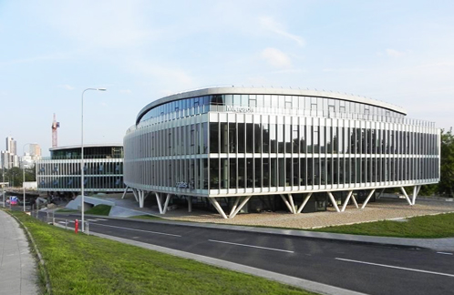

GLASSBEL – makes another step for bigger, innovative and improve
Kerraglass has just commissioned the major tempering furnace upgrade at the region’s leading glass processing plant in Klaipeda, Lithuania.

5 weeks of 24/7 joint efforts from numerous Kerraglass specialists as well as Glassbel’s team ofmechanical, electrical, engineering and operational personnel brought excellent results:
- Size of tempered glass increased to 3,2 x 7m (30’ x 7’) and it is applicable for any coating (including all new triple silver coatings) and thickness;
- 30% increase in tempering and/or heat strengthening output capacity;
- Further reductions of roller wave and anisotropy distortions. Preparatory works for roller-wave and anisotropy scanner installation have been completed as well.
The current upgrade was the last step in bringing the whole Glassbel’s production to the 3.2 x7 m standard. It is worth mentioning that in November 2017 the new Forel edge treatment center has been successfully commissioned, which also can process glass units of 3,2 x 7m. Therefore, currently Glassbel has full cycle of processing methods needed to work in modern architecture on a 3,2 x 7m size: Cutting, Edge treatment, Heat treatment, Lamination and IGU assembly. These capabilities will give architects, developers and façade contractors more opportunities to realize their ambitious ideas in architecture and glass.
GlassFINS - trend in architecture
Glassbel is proud to be part of the Dawson street project in Dublin. This project had not only large Double glazed units, but more importantly outstanding and ey catching glass fins.

The build-up was from 3 layers of low iron, digitally printed and laminated with EVA foil glass. The solution serves as solar shading system as well as makes the building visually outstanding.
- Size of tempered glass increased to 3,2 x 7m (30’ x 7’) and it is applicable for any coating (including all new triple silver coatings) and thickness;
- 30% increase in tempering and/or heat strengthening output capacity;
- Further reductions of roller wave and anisotropy distortions. Preparatory works for roller-wave and anisotropy scanner installation have been completed as well.
This is not the first Glassbel’s realized GlassFINS project. Glassbel produced GlassFINS with Sefar and SGP interlayers for Dunliary library, Ireland as well as SGP laminated fins for various Spider glazing projects in London.
Picture Dunliary; Picture Swan, Picture Hetforshire
Experience from all these projects pushed Glassbel to make next steps innovating Fins, their fixing methods, improving edge finish qualities and overall structural performance. Currently Glassbel together with science partners from Germany are preparing the stand for Technology Live exhibition at 2018 Glastech fair in Dusseldorf. Let’s meet there and we will demonstrate our progress.